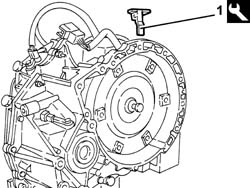
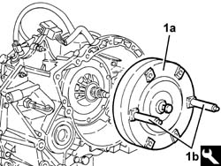

2130B10 automatic transmission torque converter - r + r with transmission removed
- Path
- Procedures > 21 GEARBOX > 2130 AUTOMATIC TRANSMISSION AND DIFFERENTIAL > 2130B automatic transmission components > 2130B10 automatic transmission torque converter - r + r with transmission removed
- Kind
- repair procedure (removal / refitting; the operation number is the code)
- Applies to
- engines: 2.5 V6; all production periods
- Interactive page
- https://sloeber94.github.io/elrnDB-a156/en/#/3237993
Applies to: engines: 2.5 V6; all production periods; only with equipment: Q-System
 Removing
Removing
 Refitting
Refitting1. Remove the torque converter locking tool.
 | Name | Country |
|---|---|---|
1 | Clip | 1.870.756.000 |

Applies to: engines: 2.5 V6; all production periods; only with equipment: Q-System
1. Remove the torque converter (1a) with the tool (1b).
| Name | Country |
|---|---|---|
1b | Pin torque | 1.867.028.000 |

Applies to: engines: 2.5 V6; all production periods; only with equipment: Q-System
Refitting
RemovingRefit the torque converter in its housing using the tool.
| Name | Country |
|---|---|---|
- | Pin torque | 1.867.028.000 |
Lock the torque converter with the special tool.
| Name | Country |
|---|---|---|
- | Clip | 1.870.756.000 |